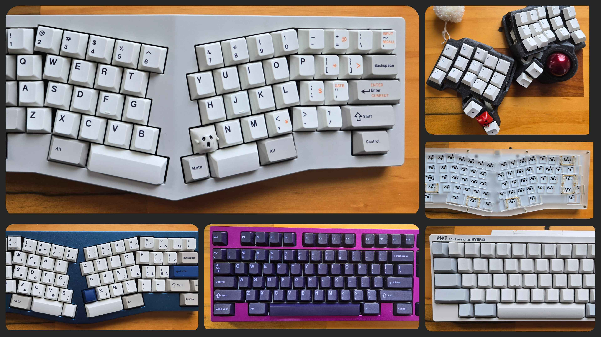

Pretty early on in life I found myself chronically on the web. On my right, my mouse, my left, my keyboard, and the world at my fingertips.
Most of our choices for keyboards were made for us by our guardians, schools, or laptop manufacturers. This was not any different for myself until I made the mistake of being a lurker on r/mk. Here I was introduced to the vast, insane, and eye wateringly expensive world of custom keyboards. I did not realize at the time this was my first step into circles of keyboard hell.
Just a few years ago custom keyboards kits were not as much like the lego kits as they are nowadays. Keyboard cases were just the starting line and sourcing all the components and then finally soldering up your PCB and then using it would seem like the end of the race, but wait, there’s more!
There are magic keycodes, additional layers, mouse keys, and custom functions that are all available with QMK compatible keyboards. Pretty early on in my career as a software developer I received an Apple device. Being a Windows user my whole life I had become very accustomed to never, EVER, pressing the Windows key. So much so that I often ordered keyboard cases that had blockers over the location, referred to as WKL keyboards (‘winkey’-less).
In my quest to make my amazing custom keyboard swap the ALT key with a WIN key at will, I had to learn how to compile a .hex file to flash to my board.
But what does that even mean?
For those non-anointed, which included me at the time, learning through fire.
For brevity, I have simplified my findings below and it may not apply in your situation:
- pull down the open-source project from GitHub
- find your specific keyboard (if uploaded) among the thousands of keyboards directories
- edit the
rules.mkfile to allow for the desired modification for your specific keyboard - compile the firmware via the make command
- locate your compiled
.hexfile for flashing - ensure that you have the flashing GUI installed (or flash via Linux CLI)
- open the flashing GUI and put your PCB in bootloader mode (hitting the reset button or shorting the connection)
- FINALLY, we should have the desired changes
All of this suffering was in the effort to attain the magical QK_MAGIC_SWAP_LALT_LGUI, or AG_LSWP for short, key.
Tools such as VIA make the above irrelevant. We can simply use the QK_MAGIC_SWAP_LALT_LGUI key-hexcode 0x7016 and take a massive step across my pool of suffering.
Quest complete, but does all of this make me type any faster?
Haha, no.
Collection
